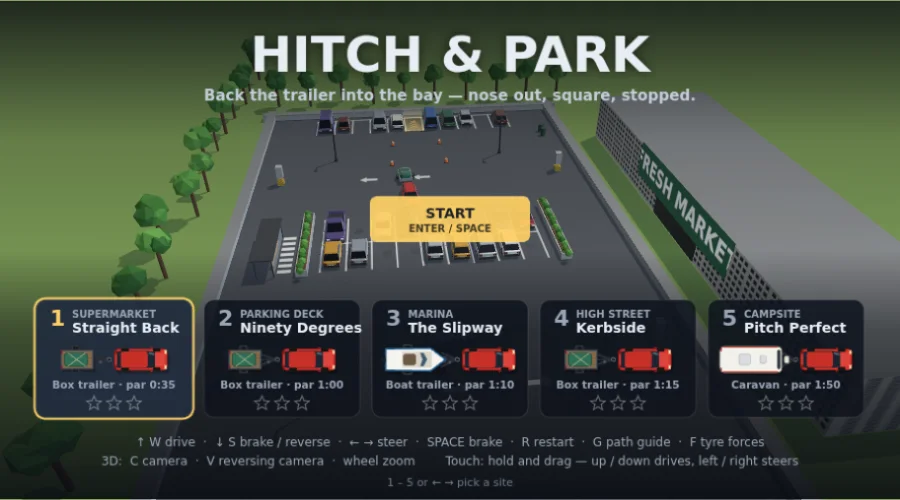

开始 →完整游戏Hitch & Park
一款俯视视角的拖车停车游戏：五个场景——超市停车场、立体停车楼、码头下水坡道、商业街、露营地——每处都有一个标记车位，拖车必须停进去，车头朝外、摆正、停稳。停着的车可以被顶开（它们的双闪会出卖你），锥桶会被撞倒，柱子、树篱和树木纹丝不动；每次碰撞都会扣分，计时器与标准时间赛跑。↑ ↓ 前进 / 倒车，← → 转向，空格 刹车，G 轨迹辅助；触屏上按住并拖动。物理：汽车由车身加四个独立的车轮刚体组成——后轮用 WeldJoint 固定，前轮挂在 PivotJoint 上，并由按阿克曼角度设置的 AngleJoint 转向——而且只有前轮驱动，所以真的是转向的前轮把车拉着转弯；拖车通过拖球处的 PivotJoint 挂接，倒车方向不对就会折叠。3D 模式下有带阴影的场景、会转动和转向的车轮、刹车灯与倒车灯，以及倒车影像小窗。